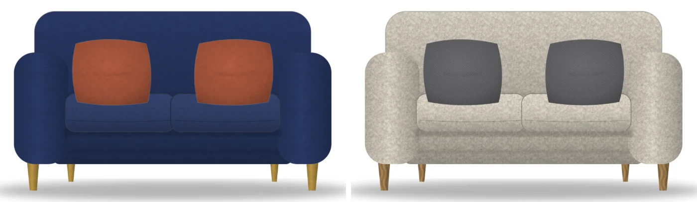
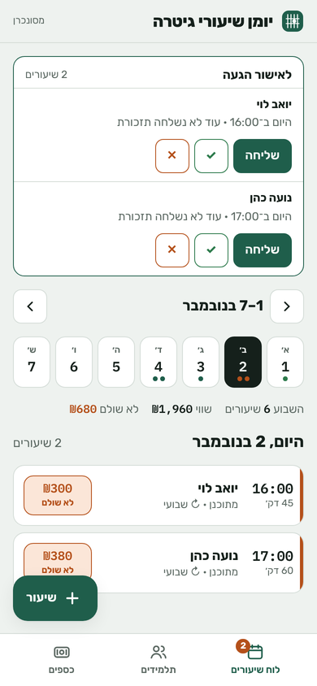
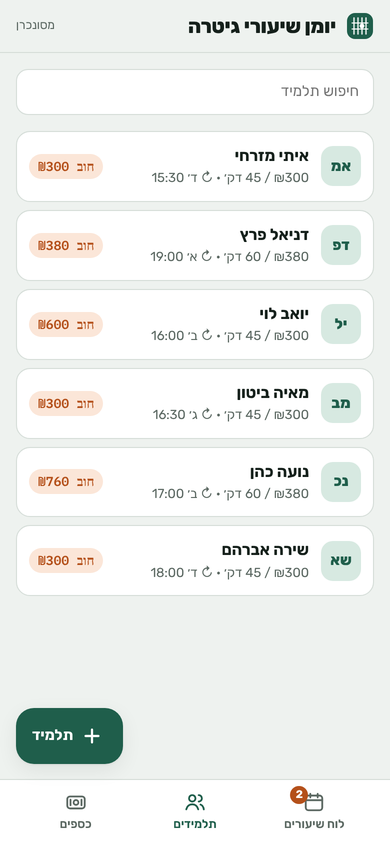
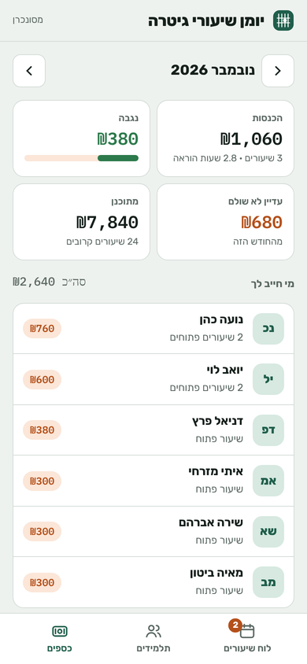

For the last three years I've designed, built and maintained the production systems behind an Israeli furniture store, including a product configurator that renders every variant live from a single photo. I'm a native English speaker (born in England), based in Israel, and available for remote work.

Instead of photographing every fabric × color × leg combination, each product has one base photo. Every part of the product is a CSS-masked layer filled with a color or texture, with its own blend mode, opacity and stacking order. Choosing an option repaints the layers instantly.
SELECT … FOR UPDATE and optimistic last-updated checks.The production code belongs to the store. The demo is a from-scratch rebuild of the core technique: my own art, textures and code.
The configured product is rendered in the browser on a canvas, validated in PHP, converted to WebP and stored on the exact cart line, so the cart and the order show the customer's own design. Images are served by HMAC-signed URLs with token and cart-ownership checks.
PHP · Canvas · securityA drag-and-drop admin editor for placing points on a product photo. On the store, each point opens and scrolls to its attribute group.
PrestaShop module · JavaScriptStaff-built variant tiles on category pages, with canonical and noindex handling so they help shoppers without hurting SEO.
PHP · Smarty · SEOAn absolute price matrix for combinations, a product-image watermark overlay, a log of every outgoing store email, bulk WebP conversion, and Python FTP/SFTP sync scripts.
PHP · Python · ops


The app I use to run my own guitar teaching: weekly slots turn into lessons automatically, then attendance, partial payments, debts and monthly income. It works offline and syncs to a password-protected PHP API with atomic writes and 60 days of daily backups. Lesson reminders are sent as Web Push notifications I implemented from the RFCs (VAPID + aes128gcm, PHP openssl only), driven by cron. Every push to main deploys through GitHub Actions over FTPS.
A Hebrew app that gives one small task at five set times each day, with content kept separate from the code, offline support and cron-driven phone notifications. Built on the same stack. Private, since it's personal.
PWA · PHP · Web PushPython scrapers for houzz.com, Angular / TypeScript front ends, a NestJS + MongoDB API, and client websites, including a law-firm site and WordPress sites.
Python · Angular · Node.jsPlan first, build one small phase, validate, checkpoint, then commit only approved files.
I use Claude, ChatGPT and coding agents every day, under written project rules I set myself (e.g. no changes to cart, pricing or checkout without explicit approval). I read and own every line that ships.
Shadow-mode rollouts, parity reports, transactions and backups. On a live store, the change that doesn't break anything wins.
Tell me what can't be done, and I'll find a way to build it.